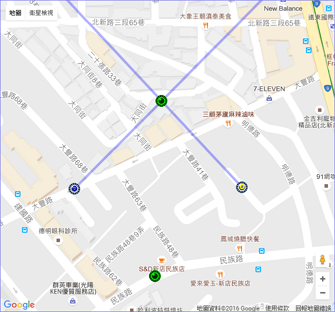
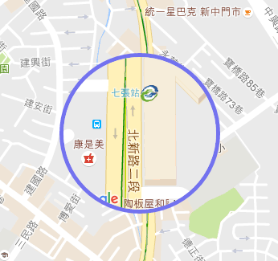

Toggle navigation
Applications
Landmark Finder
Magnifier
Google Map Applications
Some userfull Google Map applications.
Landmark Finder

Find the position of a landmark through two different points of view.
View details »
Magnifier

Right-click on the Google Map to toggle a magnifier on it.
View details »